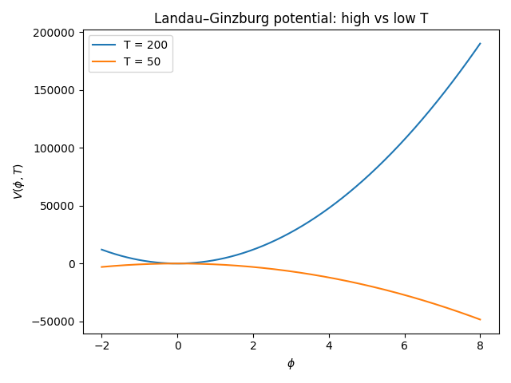
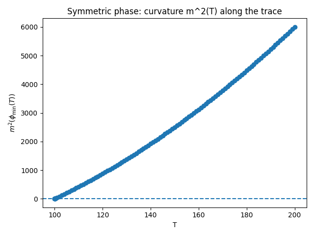
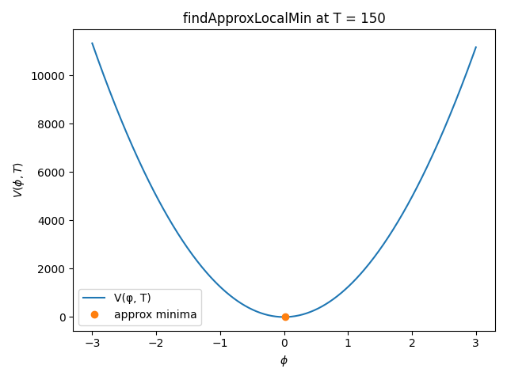
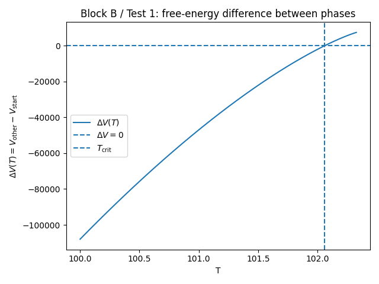
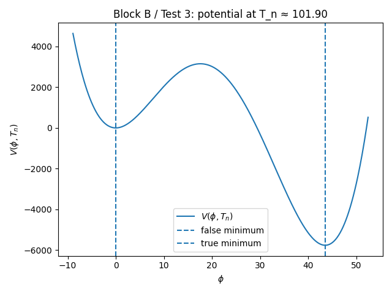
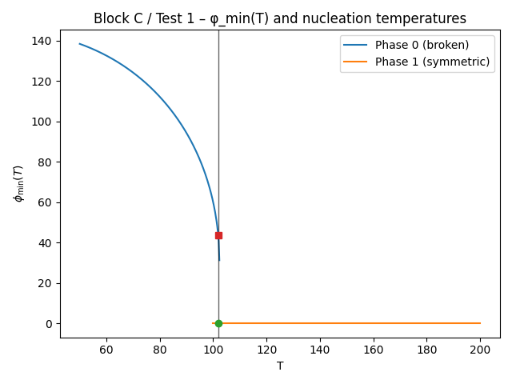
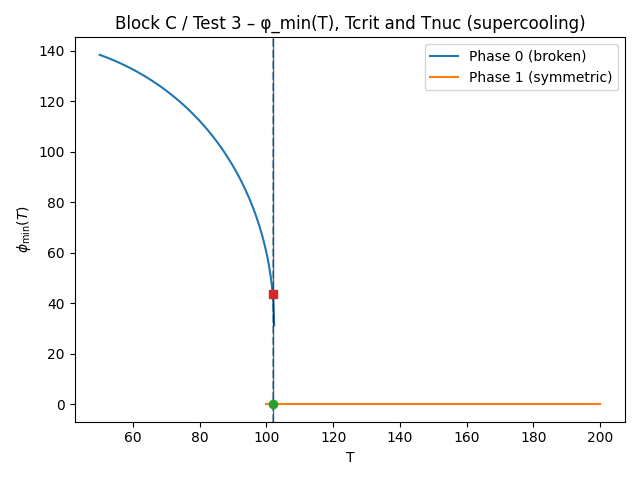

tests Transition Finder¶
This document summarizes the tutorial-style tests for the transitionFinder
module, focusing on the visual outputs (plots) and the physical intuition
behind them.
The goal is that, by reading this file and looking at the figures, a user can
understand what the Block A primitives (traceMinimum, Phase, traceMultiMin,
findApproxLocalMin, removeRedundantPhases, getStartPhase) are doing in a
concrete, finite-temperature scalar-field model.
Block A – Landau–Ginzburg toy model and phase tracing¶
All tests in Block A use the same 1D finite-temperature potential
with \(D > 0\), \(\lambda > 0\), and a small cubic term \(E > 0\). This is the standard Landau–Ginzburg toy model for a first-order phase transition:
- At high temperature, there is a unique minimum at \(\phi = 0\) (symmetric phase).
- At lower temperature, non-trivial minima at \(\phi \neq 0\) appear (broken phase).
- In an intermediate range, symmetric and broken phases coexist, separated by a barrier.
- Below a spinodal temperature, the symmetric minimum disappears.
The tests are organized to show how Block A routines reconstruct this structure.
Test 1 – Potential shape and minima at high and low temperature¶
Script: test_blockA_1_potential_shape_and_minima
What it does
- Evaluates \(V(\phi, T)\) on a grid in \(\phi\) for two temperatures:
- \(T_\text{high} = 200\) (well above \(T_0\)),
- \(T_\text{low} = 50\) (well below \(T_0\)).
- Finds numerically:
- the minimum near \(\phi \simeq 0\) at high T,
- the broken minimum at low T.
- Checks the curvature \(m^2 = d^2V/d\phi^2\) at these points to verify stability.
Expected plot
A single figure with two curves:
- Horizontal axis: \(\phi\).
- Vertical axis: \(V(\phi, T)\).
- Curves:
- \(V(\phi, T_\text{high})\): single well at \(\phi \approx 0\).
- \(V(\phi, T_\text{low})\): double-well structure with a deeper minimum at \(\phi \neq 0\).
What to look for
- At high T:
- the curve has a single minimum at (or extremely close to) \(\phi = 0\).
- At low T:
- the origin becomes unstable (local maximum or shallow region),
- a new broken minimum appears at \(\phi > 0\).
Placeholder for figure

Test 2 – traceMinimum on the symmetric phase (descending in T)¶
Script: test_blockA_2_traceMinimum_symmetric_phase_downwards
What it does
-
Starts from the symmetric minimum:
-
initial condition: \(\phi = 0\) at (T = 200).
- Uses
traceMinimumto follow this minimum downwards in temperature until it becomes unstable. -
Records:
-
the temperature grid
T, - the traced minimum \(\phi_{\min}(T)\),
- the curvature \(m^2(T) = \frac{d^2V}{d\phi^2}|_{\phi_{\min}(T)}\).
- Compares the numerically extracted spinodal temperature
res.overTwith the analytic spinodal (for the symmetric phase) at \(T_\text{spin} = T_0\).
Expected plots
-
Symmetric branch \(\phi_{\min}(T)\)
-
Horizontal axis: (T).
- Vertical axis: \(\phi_{\min}(T)\).
- Markers along the traced points from
traceMinimum. - Vertical dashed line at \(T = T_0\) (analytic spinodal).
Behaviour:
- \(\phi_{\min}(T)\) should stay very close to 0 at all temperatures where the symmetric minimum exists.
-
Near \(T \approx T_0\), the branch ends (spinodal).
-
Curvature \(m^2(T)\) along the symmetric trace
-
Horizontal axis: (T).
- Vertical axis: \(m^2(T) = d^2V/d\phi^2|_{\phi_{\min}(T)}\).
- A horizontal line at \(m^2 = 0\) indicating the stability threshold.
Behaviour:
- For \(T \gg T_0\), \(m^2 > 0\): the symmetric minimum is stable.
- As \(T \to T_0\), \(m^2 \to 0\).
- This signals the spinodal point where the symmetric phase loses stability.
Placeholders for figures


Test 3 – traceMinimum on the broken phase (ascending in T)¶
Script: test_blockA_3_traceMinimum_broken_phase_upwards
What it does
-
First finds a broken minimum at low temperature:
-
\(\phi_b(T=50)\) via a 1D minimization.
- Uses
traceMinimumstarting from \(\phi_b(50)\) at (T = 50), and follows this broken minimum upwards in temperature. - Records the branch until the broken phase disappears or becomes unstable.
- Computes the curvature \(m^2(T)\) along the broken branch.
Expected plot
-
Broken branch \(\phi_{\min}(T)\)
-
Horizontal axis: (T).
- Vertical axis: \(\phi_{\min}(T)\) for the broken phase.
- A horizontal line at \(\phi = 0\).
Behaviour:
- At low T, \(\phi_{\min}(T)\) is significantly away from 0 (spontaneous symmetry breaking).
- As T increases, \(|\phi_{\min}(T)|\) decreases, tending towards 0 as you approach the region where the symmetric phase dominates.
- The branch ends near the broken-phase spinodal temperature
res.overT.
Placeholder for figure

Test 5 – traceMultiMin and Phase: global phase structure¶
Script: test_blockA_5_traceMultiMin_and_Phase_structure
What it does
-
Builds the phase structure in the interval \(T \in [50, 200]\) using:
-
seeds at \((\phi = 0, T = 200)\) (symmetric),
-
and \((\phi_b(T=50), T = 50)\) (broken).
-
Runs
traceMultiMinto trace all minima that arise from these seeds, and thenremoveRedundantPhasesto clean up duplicates. -
Constructs
Phaseobjects for each branch and checks that: -
there is exactly one symmetric-like phase (with \(\phi \approx 0\) at high T),
-
at least one broken-like phase.
-
Uses
getStartPhaseto identify the high-temperature phase. -
For each
Phase, compares the spline-basedvalAt(T)with a direct minimization of \(V(\phi, T)\) at a few T values (sanity check).
Expected plot
Phase structure: \(\phi_{\min}(T)\) from Phase splines
- Horizontal axis: (T).
- Vertical axis: \(\phi_{\min}(T)\).
- One curve per
Phaseobject, plotted as a function of T over its domain.
Behaviour:
-
A symmetric branch:
-
stays near \(\phi \approx 0\) over a wide range of temperatures,
- is present at the highest T.
-
A broken branch:
-
exists at lower T with \(\phi \neq 0\),
- bends towards \(\phi \to 0\) as T increases,
- terminates at its own spinodal.
This plot is the closest thing to a “phase diagram in T” in Block A: it shows how each phase’s vacuum expectation value evolves with temperature.
Placeholder for figure

Test 6 – findApproxLocalMin on a simple segment¶
Script: test_blockA_6_findApproxLocalMin_on_simple_segment
What it does
-
Focuses on a fixed temperature \(T = 150 > T_0\), where the potential has a unique minimum at \(\phi = 0\).
-
Considers a straight segment in field space:
and calls findApproxLocalMin along this segment.
findApproxLocalMinsamples the segment, looks for discrete local minima in \(V(\phi, T)\), and returns approximate positions of minima between the segment endpoints.
Expected plot
Potential along the segment and found approximate minima
- Horizontal axis: \(\phi\).
- Vertical axis: \(V(\phi, T)\) for fixed (T = 150).
- Curve: \(V(\phi, 150)\) over \(\phi \in [-3, 3]\).
- Markers: positions returned by
findApproxLocalMin(approximate minima).
Behaviour:
- The curve should be a single well centred at \(\phi = 0\).
findApproxLocalMinshould identify minima very close to \(\phi = 0\).- If it finds more than one minimum, they should cluster around the origin, reflecting the discrete sampling.
Placeholder for figure

If you want to see the full test script of this block go to tests/transitionFInder
Block B – Tunneling core: bounce solutions and nucleation¶
In Block A we only described where the phases lie along \(T\). Block B goes one level deeper: given this phase panorama, what does the theory do with it? It tunnels.
Here we test exactly that:
- how to identify the critical temperature at which two phases become degenerate;
- how to solve the 1D bounce corresponding to a false → true tunnel;
- how to stitch everything into a high-level function that provides the nucleation temperature with the standard criterion \(S_3(T_n)/T_n \simeq 140\).
All tests still use the same Landau–Ginzburg potential from Block A, so that we can connect directly:
“This phase curve I saw in Block A is the same one that is now nucleating a bubble with some action at \(T_n\).”
Test B1 – Critical temperature and free-energy differences¶
Script: test_blockB_1_potential_diff_and_Tcrit
Physical goal
Given a start_phase (here, the symmetric high-temperature phase),
we want to identify the temperature at which some other phase becomes
energetically degenerate with it:
This point defines a critical temperature for that phase — the boundary where it ceases to be the most favorable in free energy.
What the test does
- Builds the phases with
traceMultiMin(as in Block A) and identifies the high-\(T\) phase withgetStartPhase. - Uses
_maxTCritForPhaseto find the temperature \(T_\text{crit}\) at which thestart_phaseties with some competing phase. - Evaluates
_potentialDiffForPhase(T, start_phase, other_phases, V)at \(T_\text{crit}\) to check that \(\Delta V(T_\text{crit}) \approx 0\). - Scans an interval in \(T\) and plots \(\Delta V(T)\), marking the point where it crosses zero.
Interpretation
- For \(T > T_\text{crit}\) we expect \(\Delta V(T) > 0\): the starting phase is still energetically preferred.
- For \(T < T_\text{crit}\) some other minimum is deeper: the starting phase becomes metastable or unstable.
- The test numerically ensures that:
DV(Tcrit) = V(other) - V(start) ≈ 0
Critical temperature T_c ≈ 102.0621
ΔV(T_c) = V(other) - V(start) ≈ 3.5406e-01 (should be ~ 0)
within the specified tolerance.
Expected plot
- Horizontal: \(T\)
- Vertical: \(\Delta V(T) = V_\text{other} - V_\text{start}\).
- A smooth curve \(\Delta V(T)\) crossing the zero axis.
- A horizontal line at \(\Delta V = 0\).
- A vertical line at \(T = T_\text{crit}\).
Visually, you are seeing the moment when the two phases “tie” in free energy.
Placeholder for figure

Test B2 – _solve_bounce in a 1D metastable configuration¶
Script: test_blockB_2_solve_bounce_single_field_example
Physical goal
Before using the full nucleation machinery, we want to look closely at the
numerical core: given a false vacuum and a true vacuum in 1D,
does the backend _solve_bounce actually find a bounce with finite action?
More concretely, we look for a \(T\) such that:
- \(\phi = 0\) is still a local minimum (metastable),
- there exists a deeper minimum at \(\phi = \phi_\text{true} > 0\),
- the two are separated by a barrier.
This is the classic scenario for a first-order tunnel.
What the test does
-
Scans \(T\) values slightly above \(T_0\) until it finds:
-
\(m^2(\phi=0,T) > 0\) (positive curvature → local minimum),
-
an analytic minimum \(\phi_\text{true} > 0\) with \(V(\phi_\text{true},T) < V(0,T)\).
-
Defines:
-
x_high = [0.0]as the false vacuum, -
x_low = [phi_true]as the true vacuum. -
Builds scalar wrappers:
def V_fixed(x): return V(x, T_test)
def dV_fixed(x): return dV_dphi(x, T_test)
-
Calls
_solve_bounce(...), which internally: -
tries to use
pathDeformationif available, -
otherwise falls back to
tunneling1D.SingleFieldInstantonin the 1D direction. -
Checks that:
-
trantype == 1(first-order transition), - the returned
actionis finite and positive, -
a valid
instantonobject is returned. -
Plots the potential at \(T_\text{test}\) with both minima highlighted.
Interpretation
-
If
trantype = 1andaction > 0: -
the backend successfully solved the bounce equation with the correct boundary conditions,
-
the result is consistent with the physical interpretation of a false → true tunnel.
-
This is the local check that SingleFieldInstanton is really delivering a physical solution for the test potential.
Expected plot
- Horizontal: \(\phi\) (region between \(0\) and slightly above \(\phi_\text{true}\)).
- Vertical: \(V(\phi, T_\text{test})\).
- Curve: \(V(\phi, T_\text{test})\).
-
Vertical lines marking:
-
\(\phi = 0\): false vacuum,
- \(\phi = \phi_\text{true}\): true vacuum.
This plot lets you see the “landscape” in which the bounce lives: two basins separated by a little hill (the barrier).
Placeholder for figure

Space for important prints
Importants Terminal output:
Chosen T_test = 100.2000
V(false, T_test) at phi=0 = 0.0000e+00
V(true, T_test) at phi=58.7571 = -9.4718e+04
m^2(phi=0, T_test) = 8.0080e+00 (> 0 ⇒ metastable origin)
_solve_bounce returned trantype = 1
Bounce action S3(T_test) ≈ 2.9944e+01
instanton object type = <class 'CosmoTransitions.tunneling1D.SingleFieldInstanton'>
to reinforce that the scenario is genuinely metastable with a nontrivial bounce.
Test B3 – tunnelFromPhase and the nucleation temperature \(T_n\)¶
Script: test_blockB_3_tunnelFromPhase_default_criterion
Physical goal
Now we use the high-level tool tunnelFromPhase to:
-
take the phase panorama from Block A,
-
search in \(T\) for possible bounces between the symmetric and broken phases,
-
apply a nucleation criterion of the form
- and identify the nucleation temperature \(T_n\).
In other words: here we see the passage “metastable phase + bounce → cosmological phase transition”.
What the test does
-
Reconstructs the phases with
_build_phases()and usesgetStartPhaseto take the high-\(T\) symmetric phase asstart_phase. -
Calls
tunnelFromPhase(...)with: -
V,dV_dphi, Tmax ≃ 200,overlapAngle = 45°(pruning of nearly collinear directions in field space),-
explicit nucleation criterion \(S_3/T - 140\).
-
tunnelFromPhaseinternally: -
scans temperatures between the lower bound of the phase and
Tmaxlooking for bounce solutions via_tunnelFromPhaseAtT, - at each \(T\), uses
_solve_bounce(which in turn usespathDeformationorSingleFieldInstanton), -
stores in a dictionary
outdict[T]the best (lowest-action) bounce found. -
If it finds a first-order transition (
trantype == 1): -
it returns a dictionary with:
Tnuc,low_vev,high_vev,low_phase,high_phase,action(i.e. \(S_3(T_n)\)),instanton(object from the bounce routine).
-
The test then:
-
prints \(T_n\), \(S_3(T_n)\) and \(S_3(T_n)/T_n\),
- checks that
trantype == 1, - verifies that \(S_3/T\) is close to \(140\) (it need not be millimetric),
- compares \(T_n\) with \(T_\text{crit}\) from Test B1, requiring \(T_n \lesssim T_\text{crit}\) (moderate supercooling, as expected in a first-order transition),
-
checks that, at \(T_n\), the “low” phase indeed has smaller free energy than the “high” one.
-
For visual intuition, it plots the potential at \(T = T_n\) with both minima marked.
Interpretation
-
tunnelFromPhaseis the “glue” between: -
phase vs. \(T\) information (Block A),
- bounce solving (SingleFieldInstanton / pathDeformation),
-
cosmological nucleation criterion (here, \(S_3/T \sim 140\)).
-
The test shows that:
-
the code finds a \(T\) where the bounce is efficient enough to satisfy the criterion;
- this temperature is indeed below the critical degeneracy temperature;
- at \(T_n\), the “low” minimum is physically the true one (smaller free energy).
Expected plot
- Horizontal: \(\phi\) in the neighborhood of both minima at \(T_n\).
- Vertical: \(V(\phi, T_n)\).
- Curve: \(V(\phi, T_n)\).
-
Vertical lines marking:
-
high_vev(false vacuum), low_vev(true vacuum).
This is the analogue of Test B2, but now at the “special” temperature \(T_n\) defined by the nucleation criterion instead of an arbitrary \(T\).
Placeholder for figure

Space for important prints
It is worth recording something like:
--- tunnelFromPhase result ---
T_nuc ≈ 101.8969
S3(T_nuc) ≈ 14191.6326
S3(T_nuc) / T_nuc ≈ 139.2744
low_phase key = 0
high_phase key = 1
trantype = 1 (1 = first order)
S3/T - 140 ≈ -0.726
Critical temperature T_crit ≈ 102.0621
We expect T_nuc < T_crit for a supercooled first-order transition.
V(false, T_nuc) at phi=-0.0000 = 1.2320e-35
V(true, T_nuc) at phi=43.5502 = -5.7643e+03
to illustrate numerically:
- how close \(S_3/T\) is to \(140\),
- how far below \(T_\text{crit}\) the \(T_n\) sits,
- and that the “low” phase is indeed the energetically favored one.
Demo – Alternative nucleation criterion (pedagogical example)¶
Functions: ew_like_nuclCriterion, demo_blockB_alternative_nucleation_criterion
Besides the tests, the file includes a non-pytest demo that shows how to replace the standard nucleation criterion with another one, for example:
with some arbitrary scale \(M_\text{eff}\). The goal here is not to be realistic for the toy model, but rather to:
- show the signature that
nuclCriterion(S,T)must have; - illustrate how the choice of criterion can shift \(T_n\).
The function demo_blockB_alternative_nucleation_criterion():
- calls
tunnelFromPhasewith the standard criterion \(S/T - 140\); - calls it again with
ew_like_nuclCriterion; - prints both \(T_n\) values and both \(S_3/T\) values, allowing a comparison.
This demo is useful as a template for plugging in your favorite nucleation criterion without touching the main code.
If you want to see the full script for these tests (Block B), see tests/transitionFinder
Block C – Transition history: from phase structure to cosmic history¶
Block C takes everything we built in Blocks A and B and pushes it one step further:
- From phase structure (
Phaseobjects, traced minima), - Plus tunneling information (bounce actions and nucleation temperatures),
- To a full thermal history: a sequence of phase transitions as the Universe cools.
The central routines are:
secondOrderTrans– convenience wrapper for second-order transitions.findAllTransitions– builds the actual transition history using bounces.findCriticalTemperatures– finds all degeneracy temperaturesTcrit.addCritTempsForFullTransitions– matchesTcrittoTnucto quantify supercooling.
All tests in this block still use the same 1D Landau–Ginzburg potential as Blocks A and B.
Test 0 – secondOrderTrans: dictionary layout and conventions¶
Script: test_blockC_0_secondOrderTrans_basic_structure
What it does
-
Builds the phase structure using
traceMultiMin(symmetric + broken branches). -
Picks two phases and constructs a “second-order transition” dictionary by calling:
tdict = secondOrderTrans(high_phase, low_phase, Tstr="Tnuc")
-
Checks that:
-
The dictionary contains the expected keys:
Tnuc,high_vev,low_vev,high_phase,low_phase,action,instanton,trantype. trantype == 2(second order).action == 0.0andinstanton is None(no barrier, no bounce).Tnucis defined as the midpoint between the end of the high-T branch and the start of the low-T branch: $$ T_\text{nuc} = \tfrac12\bigl(T_\text{high}(T_0) + T_\text{low}(T_\text{end})\bigr). $$high_vevandlow_vevcoincide with the high-T phase vev at its upper end.
Physical intuition
For a strictly second-order transition, there is no tunneling and no action; the order parameter changes continuously and the “critical temperature” is where the curvature changes sign. secondOrderTrans encodes this in a simple dictionary so that second-order steps can live in the same pipeline as first-order (bounce-driven) transitions.
Placeholder for output
[Block C / Test 0] secondOrderTrans: basic structure and fields
Tracing phase starting at x = [138.38962553], T = 50.0
Tracing minimum up in T
Tracing phase starting at x = [1.35525272e-19], T = 102.47832031250125
Tracing minimum down in T
Tracing minimum up in T
Constructed second-order transition dictionary:
Tnuc : 125.0
low_vev : [138.38962553]
high_vev : [138.38962553]
low_phase : 1
high_phase : 0
action : 0.0
instanton : None
trantype : 2
Test 1 – findAllTransitions: full thermal history with nucleation¶
Script: test_blockC_1_findAllTransitions_full_history
What it does
-
Rebuilds the phase structure (
Phaseobjects) withtraceMultiMin. -
Uses
getStartPhase(phases, V)to identify the high-temperature phase. -
Calls
transitions = findAllTransitions(phases, V, dV_dphi, tunnelFromPhase_args=...)
which internally:
- Starts from the high-T phase.
- Attempts tunneling via
tunnelFromPhaseto all lower-energy phases. - Chooses the lowest-action transition and moves to that phase.
- Repeats from the new phase, stepping down in temperature, until no further transitions occur.
-
Falls back to
secondOrderTransif there is a continuous (second-order) branch. -
Prints a compact table:
-
idx– index in the history (0 = earliest, highest T). Tnuc– nucleation temperature.type–1(first order, tunneling) or2(second order).high_phase → low_phase– phase labels.-
S(Tnuc)– bounce action at nucleation. -
Checks that:
-
There is at least one transition.
Tnucis non-increasing along the history (Universe cools).- Phase keys in the table are valid entries of the
phasesdictionary.
Expected plot
Phase structure with nucleation markers
-
Horizontal axis:
T. -
Vertical axis: \(\phi_{\min}(T)\) for each
Phase. -
For each phase:
-
A smooth curve \(\phi_{\min}(T)\) from the spline representation.
-
For each transition in
transitions: -
A vertical line at
Tnuc. - A circle marker at
(Tnuc, high_vev). - A square marker at
(Tnuc, low_vev).
What to look for
- At high T, the symmetric phase (\(\phi \approx 0\)) is occupied.
- As T decreases, at some
Tnucthe code jumps from the symmetric branch to the broken branch (or to another low-T phase). - The printed
S(Tnuc)values tell you whether nucleation happens close to the “canonical” criterion (e.g.S/T ≈ 140) or at a different strength, depending on the chosennuclCriterion.
Placeholder for figure

Test 2 – findCriticalTemperatures: degeneracy temperatures Tcrit¶
Script: test_blockC_2_findCriticalTemperatures_degeneracies
What it does
-
Reuses the same
phasesdictionary. -
Calls
crit_trans = findCriticalTemperatures(phases, V, start_high=False)
which:
- Loops over all ordered pairs of phases
(phase1, phase2)with overlapping temperature ranges. - For each pair, defines
where \(\phi_i(T) = \text{phase}_i.\text{valAt}(T)\).
* Uses a 1D root finder (brentq) to find Tcrit such that
\(\Delta V(Tcrit) = 0\) whenever the sign of \(\Delta V\) changes across the overlap.
* Assembles a dictionary
```text
{
"Tcrit": Tcrit,
"high_vev": phase1.valAt(Tcrit),
"low_vev" : phase2.valAt(Tcrit),
"high_phase": phase1.key,
"low_phase" : phase2.key,
"trantype": 1,
}
```
-
Prints a summary table:
-
Tcrit,trantype,high_phase → low_phase, - and the free-energy difference
which should be numerically close to zero.
- Asserts that for each first-order entry
abs(ΔV) < 1e-3(degeneracy).
Physical interpretation
findCriticalTemperatures ignores dynamics and nucleation rates. It simply asks:
For which temperatures do two phases have identical free energy?
This is the equilibrium notion of a first-order transition line Tcrit, which
is then compared with the actual nucleation temperature Tnuc in Test 3.
Expected plot
Phase structure with Tcrit markers
- Same background curves \(\phi_{\min}(T)\) for each
Phase. -
For each critical transition dictionary in
crit_trans: -
A vertical dashed line at
Tcrit.
This plot is the purely thermodynamic “phase diagram in T”: the vertical lines show where phases swap their free-energy ordering.
Placeholder for figure

Test 3 – addCritTempsForFullTransitions: matching Tcrit and Tnuc¶
Script: test_blockC_3_addCritTemps_match_Tcrit_and_Tnuc
What it does
-
Rebuilds
phases. -
Computes:
-
full_trans=findAllTransitions(...)→ actual transition history with nucleation temperaturesTnuc. -
crit_trans=findCriticalTemperatures(...)→ thermodynamic degeneracy temperaturesTcrit. -
Calls
addCritTempsForFullTransitions(phases, crit_trans, full_trans)
which:
- Analyses the ancestry of phases (
parents_dict) in terms of sequences of critical transitions. - For each full transition (nucleation step) in
full_trans, searches for a compatible critical transition incrit_trans(matching high/low branches up to common parents). -
Attaches the best match as
tdict["crit_trans"](orNoneif no match). -
Prints a detailed table:
-
For each full transition:
type(trantype),Tcrit(if found),Tnuc,ΔT = Tcrit − Tnuc,- phase labels
high_phase → low_phase.
-
For first-order transitions with a matched
Tcrit, checks thatTcrit >= Tnuc(you cannot nucleate before degeneracy).
Physical interpretation
This test quantifies supercooling in a clean way:
Tcrit– the temperature at which phases are thermodynamically degenerate.Tnuc– the temperature at which bubbles actually nucleate efficiently.ΔT = Tcrit − Tnuc– how far below the equilibrium transition temperature the Universe cools before tunneling kicks in.
In strongly first-order transitions, ΔT can be substantial, which is precisely
what controls the strength of the phase transition and many gravitational-wave
signatures.
Expected plot
Phase structure with both Tcrit and Tnuc
-
Background: \(\phi_{\min}(T)\) curves for all phases.
-
From
crit_trans: -
Vertical dashed lines at each
Tcrit. -
From
full_trans: -
Vertical solid lines at each
Tnuc. - Circle and square markers for
high_vevandlow_vevatTnuc.
What to look for
-
For each first-order transition:
-
a dashed line at
Tcrit, - a solid line (with markers) at
Tnuc, -
with
Tnucat or belowTcrit(supercooling or equality). -
The size of
ΔTgives you an immediate, visually intuitive measure of how strong the supercooling is in this toy model.
Placeholder for figure

[Block C / Test 2] findCriticalTemperatures – phase degeneracies
Tracing phase starting at x = [138.38962553], T = 50.0
Tracing minimum up in T
Tracing phase starting at x = [1.35525272e-19], T = 102.47832031250125
Tracing minimum down in T
Tracing minimum up in T
Number of critical-temperature transitions found: 1
Summary of critical transitions (sorted by decreasing Tcrit):
idx | Tcrit | type | high_phase -> low_phase | ΔV(high-low)
----+----------+------+-------------------------+--------------
0 | 102.062 | 1 | 1 -> 0 | 3.347e-10
[Block C / Test 3] addCritTempsForFullTransitions – matching Tcrit and Tnuc
Tracing phase starting at x = [138.38962553], T = 50.0
Tracing minimum up in T
Tracing phase starting at x = [1.35525272e-19], T = 102.47832031250125
Tracing minimum down in T
Tracing minimum up in T
Number of full transitions: 1
Number of critical transitions: 1
Matching Tcrit and Tnuc for each full transition:
idx | type | Tcrit | Tnuc | ΔT=Tcrit-Tnuc | high_phase -> low_phase
----+-------+----------+----------+----------------+------------------------
0 | 1 | 102.062 | 101.895 | 0.167 | 1 -> 0
[Block C] All example tests executed.
If you want to see the full Block C test script, including all prints and plots, see
tests/transitionFinder/Lot_C.py.